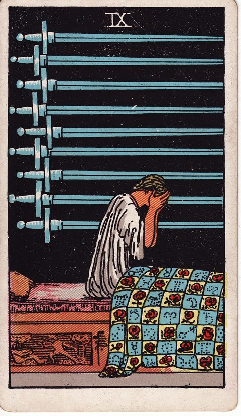
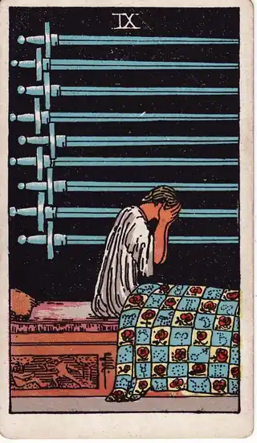

READING
On nights when you can't sleep from overthinking, a way of thinking to stop circling thoughts
· DECIDE. editors

You got into bed and closed your eyes — or so you thought. A single remark from the daytime, a problem next week that hasn't even happened yet, a message you haven't replied to. Your thoughts keep going around the same place, and before you notice, the clock's hands are pointing at the middle of the night. A "night when you can't sleep from overthinking" is not a weakness of will.
To say it up front: tonight's goal is not to solve that problem. The goal is to draw a line — "that's enough for tonight" — and hand it over to tomorrow's self. Solving is work for the hours when your head works well.
POINT 01 Why your thoughts circle at night
At night, compared to the daytime, the brain's logical brakes work less well, and it has a tendency to magnify feelings and anxiety instead. Something you could let pass in the daytime with "well, it'll work out somehow" feels big and heavy at night. That's why, no matter how seriously you worry in bed, a good solution rarely comes out of it. What comes out is only anxiety, reproduced and expanded.
Another reason is that the brain keeps holding on to "unfinished matters." Things that aren't decided, replies you haven't sent, tomorrow's schedule. The brain keeps watch so as not to forget them. What's really behind circling thoughts is usually a "mountain of things you haven't decided." More than the problem itself, the state of "it's not finished yet" is what keeps your head going around.
In other words, circling at night is not a state of "not thinking enough," but a state of "having no dividing line." What you need is not to think more deeply, but a mechanism for telling your brain "I've taken this matter in." The mechanism by which undecided things pile into a mountain is also sorted out in Why you can't decide when you're indecisive, and how to get out of it.
POINT 02 Seeing it through the cards

Nine of Swords is the figure of a person waking in bed at night and covering their face. Among the tarot, it's a card that depicts a "sleepless night" just as it is, representing a state where anxiety is amplified inside your head. However, what is depicted is not ruin, but "worry so great you can't sleep" itself. It tells you that the object of your worry is a night-specific state, where things look bigger than they really are.

The Moon, in an unsettled scene under moonlight, represents "anxiety about what you can't see" and "imagination swelling." The worst-case scenarios you think of at night are often imagination that has changed shape in the darkness. When you look again in the morning light, the outline becomes clear and they shrink. The Moon is also a signal that says "don't trust tonight's judgment too much."

Four of Swords is the figure of a knight lying down, his sword set aside. It represents the active choice of rest: "I will not fight now." It's not giving up on thinking; it's separating the time to fight from the time to rest. What tonight's self needs is not one more push of thinking, but this judgment to set the sword down.
POINT 03 The technique: get it out, and save it with a provisional conclusion
The way to stop circling thoughts is surprisingly concrete. Get the haze in your head out once, attach a provisional conclusion, and save it. It's the work of convincing your brain: "on this matter, I've stopped thinking."
There are only three steps. First, write out the matters going around your head in short words. They don't need to be sentences. Second, decide a provisional handling for each, such as "I'll think about this again tomorrow morning." It's not a solution; it's confirming a hold. Third, leave that record and close the screen or notebook. When your brain recognizes "it's recorded, so it's okay to forget it now," the watch loosens, and your strained nerves ease, just a little.
These three steps go well with the flow of drawing one card. Draw one card on the theme that's occupying your head now, and use the perspective of the card that comes up as material for a "provisional conclusion." Decide "for tonight, I'll set it down with this perspective," and leave just one line in your log. If you leave it as a decision log, tomorrow morning's self will take over the continuation as it is.
Moreover, as logs of sleepless nights accumulate, your own patterns come into view. "I tend to circle on nights after days with many decisions." "On Sunday nights it's all about tomorrow's work." When you can see the pattern, nighttime circling changes from "an anxiety of unknown origin" into "something you can handle." Thinking about sleepless nights as a whole is also gathered on the page for nights when you can't sleep from overthinking. If you feel the number of decisions in a day lies behind your circling thoughts, please also see the article on decision fatigue.
POINT 04 Questions to ask yourself
Finally, in bed, try asking yourself this. How many matters are circling right now? Aren't they all "things I haven't decided yet"? Does tonight's self still have the strength to reach a conclusion on them? If you were to set down a provisional conclusion in one line, what would you write? And if you were to hand it to tomorrow morning's self, from what time will you decide to think it over again?
The answer you should give tonight is not a solution to the problem. It's the dividing line itself: "that's enough for tonight." The luggage you've entrusted will be properly received by tomorrow's self. Close the screen, and close your eyes.
Related decision guides
Cards related to this article

More reading
- The types of free tarot readings and how they differ — where the "that feels spot-on" feeling comes from, and how to use them for a decision
- When you're torn over whether to keep going or quit. Standards for letting go of attachment
- Why I, who don't believe in fortune-telling, made tarot into a decision-making tool
- Why the more you ask for advice, the less you can decide, and how to get your own voice back
- When you're torn over whether to keep your current job. How to read a plateau in your career